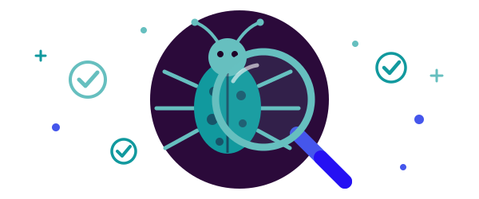
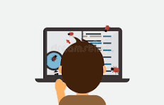
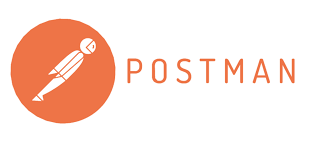
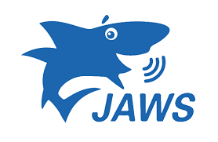
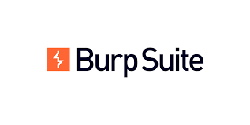
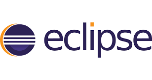
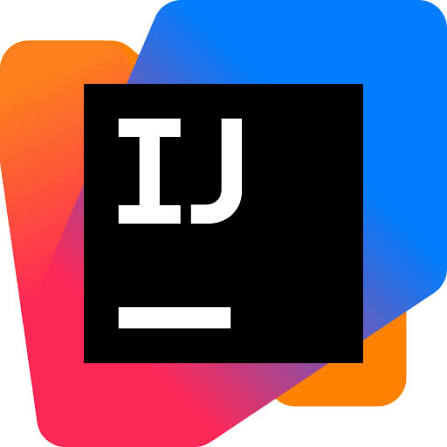
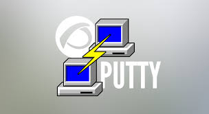
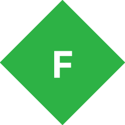

Senior QA Engineer with 8+ years of experience across Agile and Waterfall projects in the banking and insurance domains. I specialize in functional, API, and regression testing, with hands-on experience in accessibility and security testing. I'm also certified in GitHub Copilot and Claude AI, and I use both to speed up test design and improve coverage. I'm open to QA opportunities where quality is a shared goal.

My testing career began with structured training at QSpiders. Since then I've built deep experience in smoke, sanity, functional, regression, API, and non-functional testing, writing clear test cases and defect reports that developers can act on quickly.
I build automation with Java, Selenium, TestNG, JUnit, and BDD and hybrid frameworks, and I contribute code for new functional requirements. I also use GitHub Copilot and Claude AI to draft test scenarios and speed up scripting.
I do ADA/accessibility testing with JAWS to make sure applications work for differently-abled users, and security testing with Burp Suite.

Postman API testing
JAWS Accessibility
Burp Suite Security testing
Eclipse Java IDE
IntelliJ Java IDE
PuTTY Remote access
Fiddler Web debuggingAlso: TestNG, JUnit, BDD, SQL, Bitbucket, Octane
Illustrative examples written for this portfolio. They are not from any client project and contain no real data.
A confirmation with a reference number appears. The source balance decreases and the destination balance increases by the same amount, and both transactions show in account history.
The dashboard still shows the old balance. It corrects only after a manual refresh.
The balance updates as soon as the transfer completes.
Customers may think the transfer failed and submit it again, risking duplicate transfers.
The error is announced automatically, names the field, and says how to fix it (for example, "Amount exceeds available balance"). Focus moves to the invalid field, and the error is not shown by color alone.
2021 – Present | US-based banking client | Agile/Scrum
2018 – 2021 | UK government client, insurance domain | Waterfall
M.E.S Degree College of Arts, Commerce and Science | 2015 – 2018